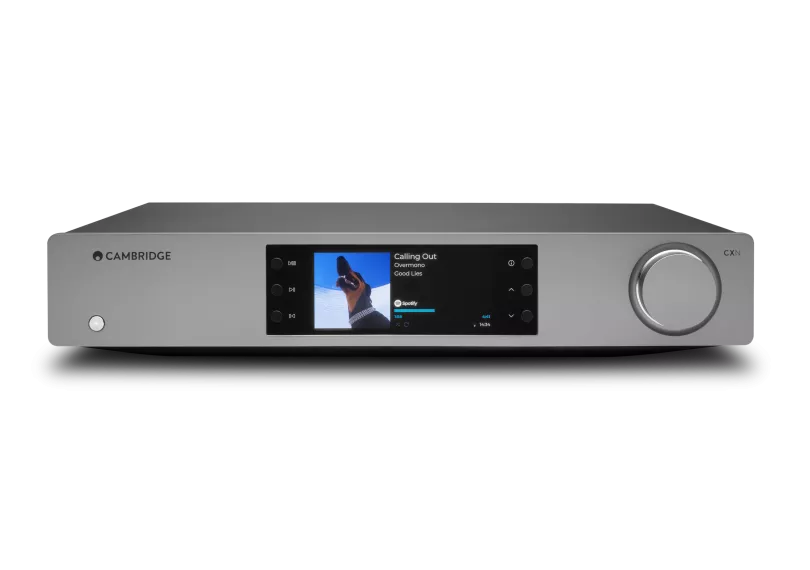
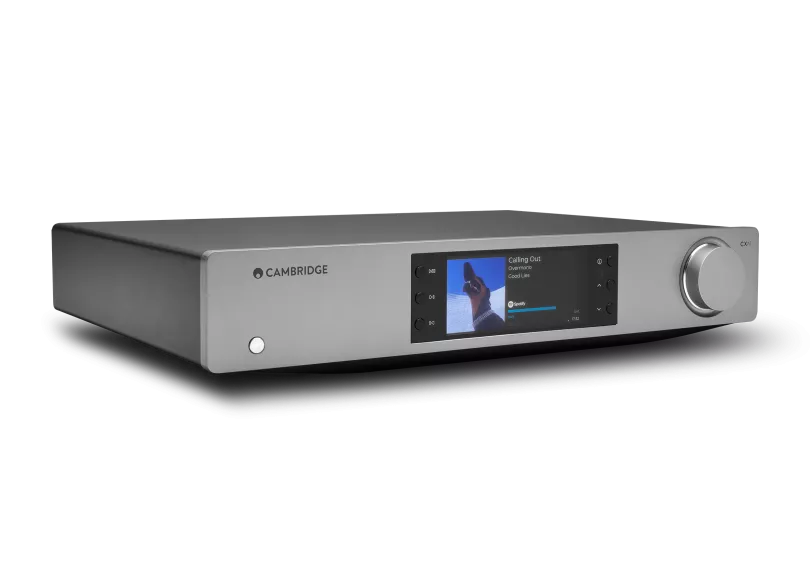
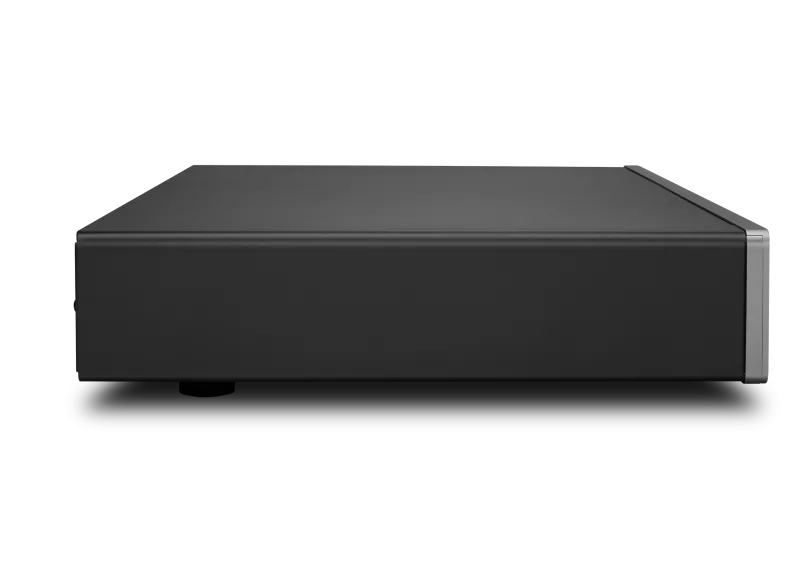
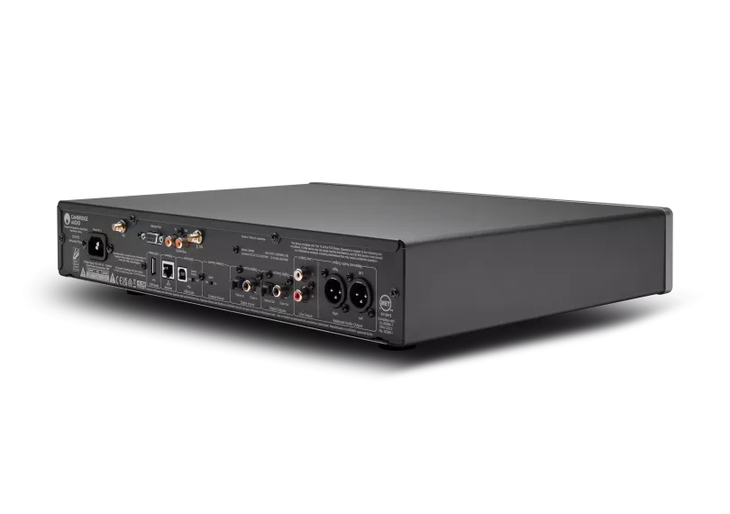
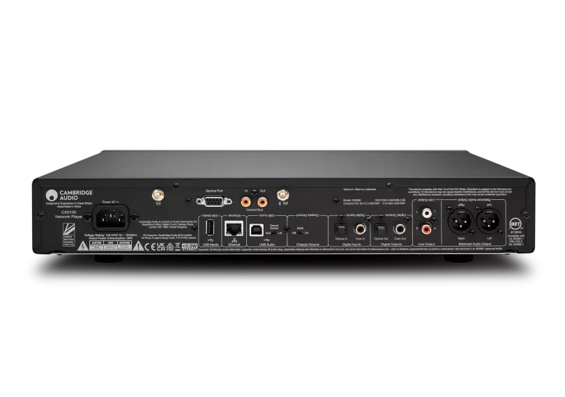
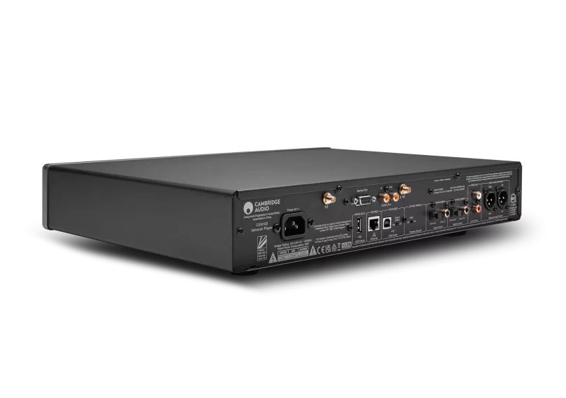
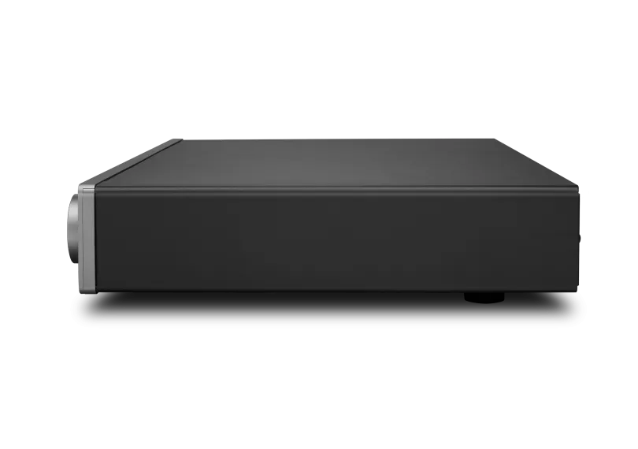
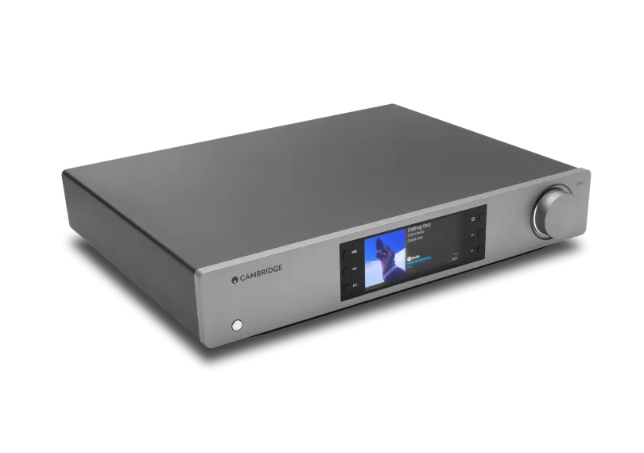
CXN100
CXN100は、ハイレゾ音源への無限のアクセス、シームレスな接続性、息をのむデジタルクオリティを実現します。精密にチューニングされた回路とアップグレードされたDACが、妥協のない純粋でパワフルなサウンドをお届けします。
ルナグレー 販売店を探す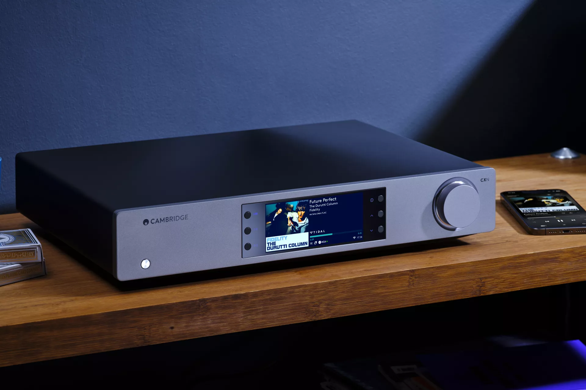
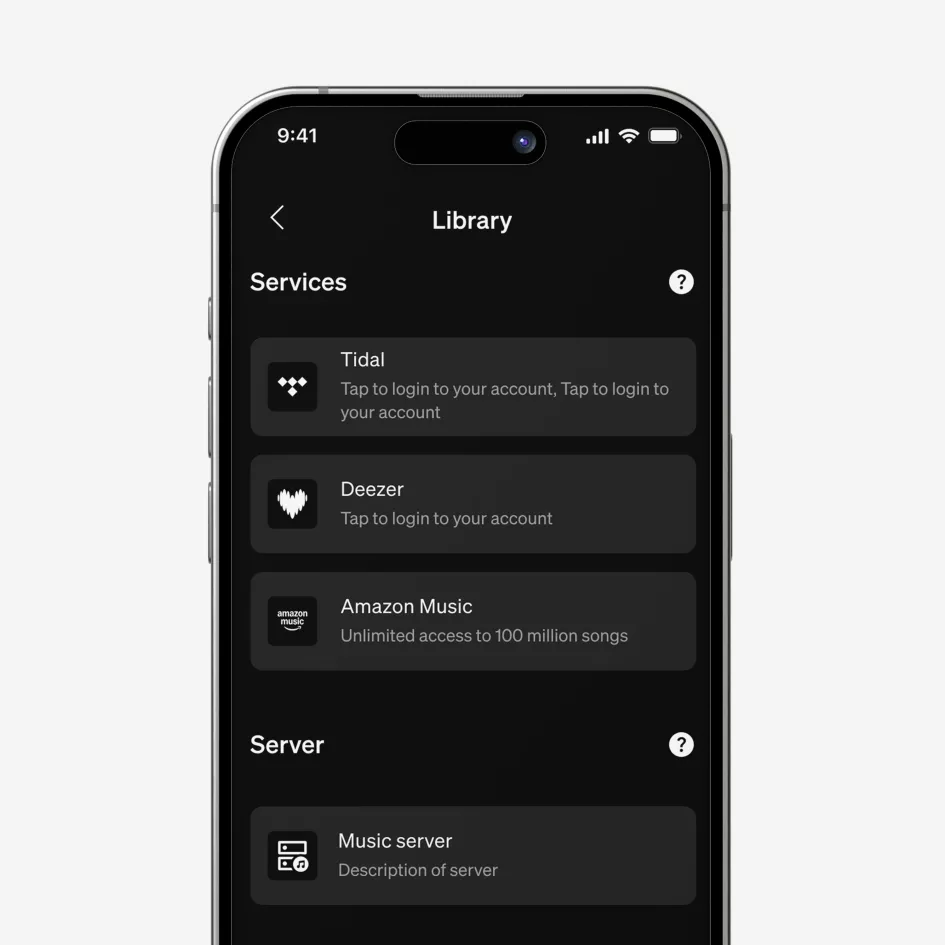
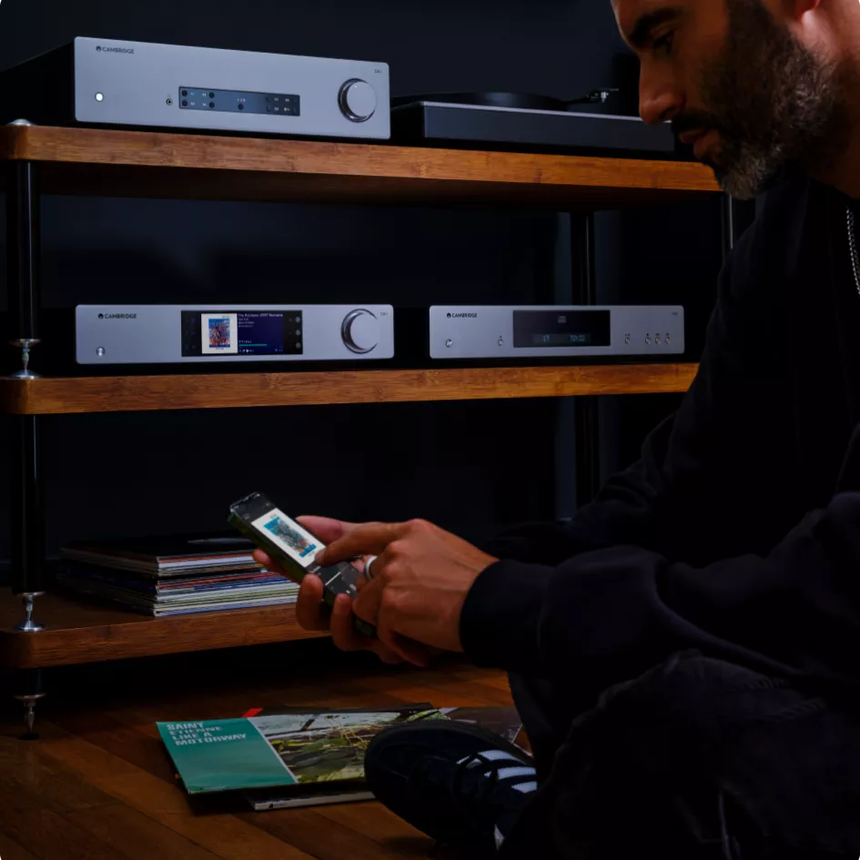
手軽なストリーミング、無限の選択肢
Spotify Connect、TIDAL Connect（MQA対応）、Amazon Music、Qobuz、Deezer、インターネットラジオ、Apple AirPlay 2、Chromecast Built-in、Bluetooth aptX HDなど、多彩なストリーミングサービスに対応。Roon Ready認定により、すべてのライブラリをひとつのシームレスなインターフェースで管理できます。
真のデジタルクラリティ
ESS ES9028Q2M SABRE32 DACが、驚くほどのディテール、温かみ、ニュアンスを引き出し、比類なき精度と深みでデジタル音源を再現。あなたとオリジナル録音の間に、何も失われることはありません。
StreamMagic Gen 4
受賞歴を誇るストリーミングプラットフォームが、スムーズなハイレゾ再生を実現。高速で安定したシームレスなリスニング体験を提供します。OTAファームウェアアップデートにより、CXN100は常に進化し続けます。
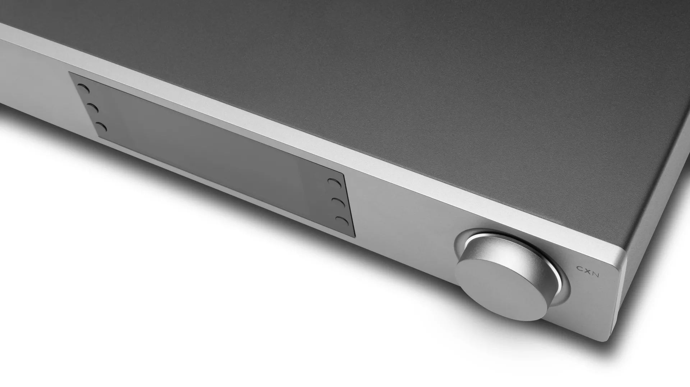
THE MOST ADVANCED NETWORK PLAYER
CXN100は、ハイレゾオーディオ、無限のストリーミング、直感的なコントロールで、デジタル音楽再生を再定義します。妥協のないサウンドと手軽なアクセスを求める方のために設計され、あらゆるシステムにシームレスに統合。従来のHi-Fiシステムに新たな息吹を吹き込みます。
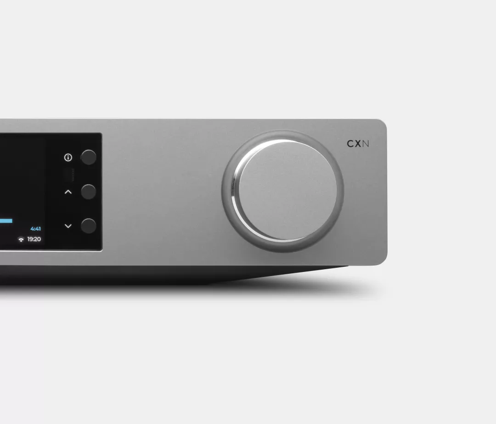
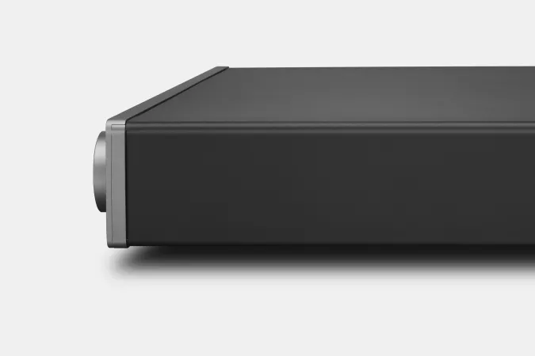
洗練されたストリーミング、精緻なサウンド
プリアンプモード
StreamMagicアプリからプリアンプモードを有効にすれば、CXN100が高品質デジタルプリアンプに変身。システムの可能性がさらに広がります。
ESS ES9028Q2M SABRE32 DAC
32ビットの透明感を解き放ち、デジタルオーディオから比類なき深み、精度、温かみを引き出します。
豊富なストリーミング対応
Spotify Connect、TIDAL Connect（MQA対応）、Amazon Music、Qobuz、Deezer、インターネットラジオ、Apple AirPlay 2、Chromecast Built-inに対応。
シームレスなマルチルーム連携
Google Home、Apple AirPlay、Roonのマルチルームシステムに対応し、家中で同期再生が楽しめます。
柔軟な接続性
USB Audio、同軸デジタル、TOSLINK、Bluetooth aptX HDを搭載。最大32-bit/384kHz、DSD256のハイレゾファイルに対応します。
直感的なコントロール
大型高解像度カラースクリーン、心地よい操作感のボリュームダイヤル、StreamMagicアプリによる再生操作、プレイリスト管理、ソース選択、トーンコントロールに対応。
"Cambridge Audio's CXN100 is the go-to network player if you seek reliable music streaming with a big-brand user experience. And who doesn't want that?"
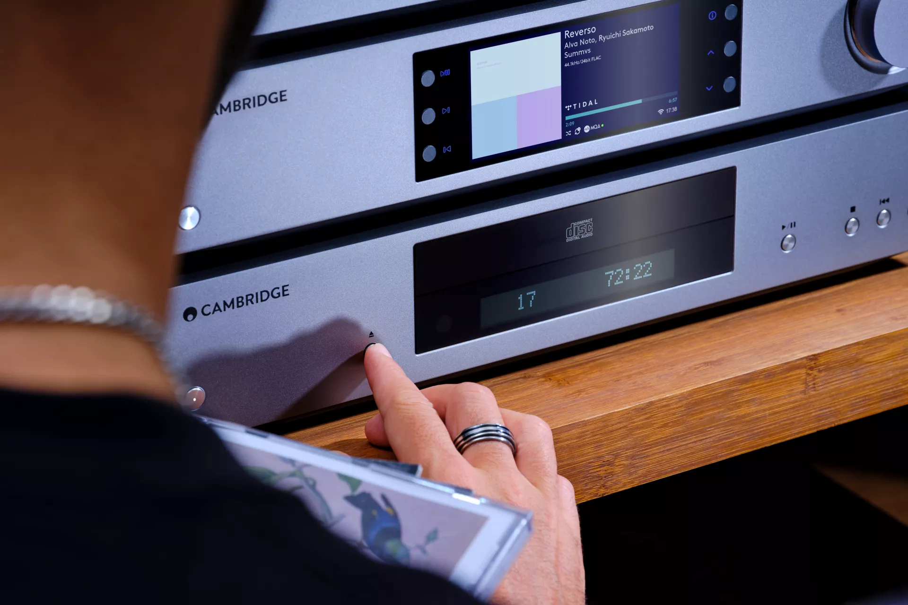
タイムレスなデザイン、未来に対応するパフォーマンス
アルミニウムとスチールから生まれたエレガントでミニマルなライン。CXN100は、物理的にも技術的にも長く使い続けられるよう設計されています。OTAアップデートにより常に最先端を維持し、これからも音楽とともに進化し続けます。
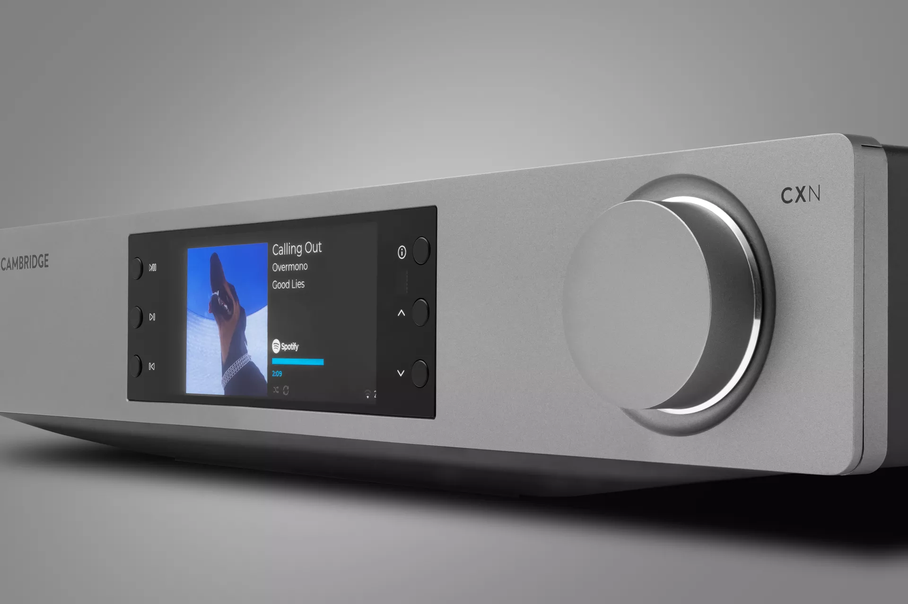
シームレスな操作、直感的な体験
滑らかなボリュームダイヤルと大型高解像度ディスプレイが、CXN100の体験を次のレベルへ引き上げます。StreamMagicアプリがコントロールセンターとなり、プレイリストの作成、プリセットの設定、アルバムの閲覧、EQの調整を簡単に行えます。

マルチルーム、あなたのスタイルで
複数のCambridge Audioストリーミングデバイスを同期させて、部屋から部屋へ音楽をシームレスに流しましょう。
Google Cast、Apple AirPlay 2、ROON対応により、理想のマルチルームシステムを自在に構築できます。
すべての部屋をひとつのパーティーシステムにまとめるも良し、部屋を移動するたびに音楽がついてくるようにするも良し。マルチルームオーディオで、リスニングが途切れることはありません。